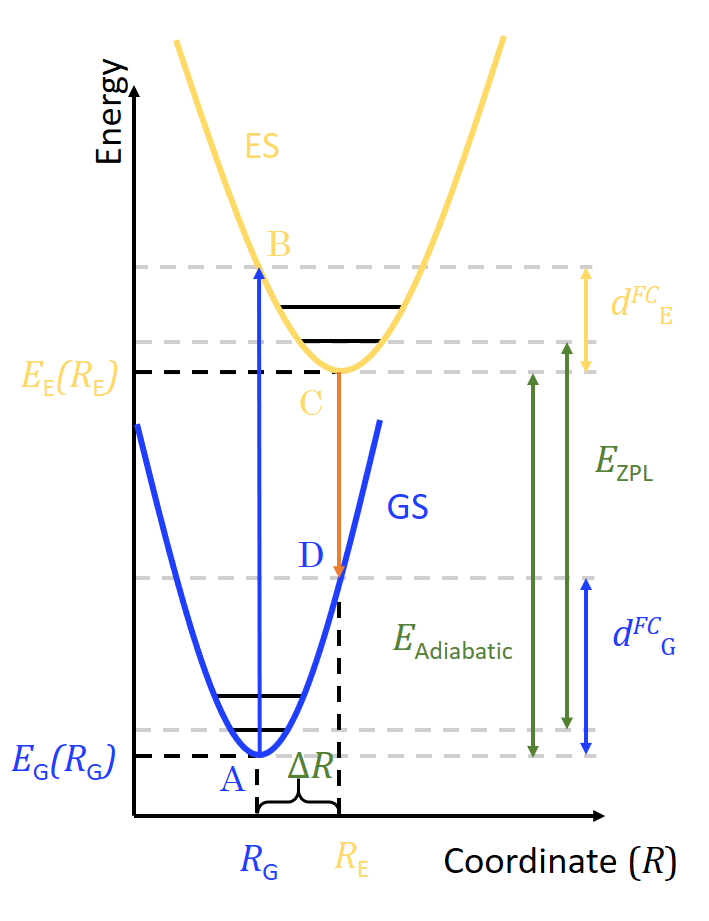

BaZrO3:Ti study#
Here are some utility functions and import that will be used throughout the study.
%matplotlib inline
import numpy as np
import matplotlib.pyplot as plt
from hylight.constants import *
eV1_in_nm = h_c / eV_in_J * 1e9
def best_max(raw_x, raw_y, f=0.95):
"Fit a 2nd order polynom to get a position of the maximum without the noise."
guess = np.max(raw_y)
y = raw_y[raw_y > f * guess]
x = raw_x[raw_y > f * guess]
x1, x2, x3, x4 = np.mean(x**1), np.mean(x**2), np.mean(x**3), np.mean(x**4)
x2y = np.mean(x**2 * y)
xy = np.mean(x * y)
my = np.mean(y)
A = np.array([[x4, x3, x2],
[x3, x2, x1],
[x2, x1, 1.]])
B = np.array([[x2y, xy, my]]).transpose()
alpha, beta, gamma = np.linalg.solve(A, B)[:, 0]
return -0.5 * beta / alpha, gamma - 0.25 * beta**2 / alpha
def load_exp(path, sep=";", skip=0):
exp = np.loadtxt(path,
delimiter=sep,
skiprows=skip)
x, y = eV1_in_nm / exp[:, 0], exp[:, 1]
xmax, ymax = best_max(x, y)
y /= ymax
return x, y, xmax
def select_interval(x, y, emin, emax, norm=True, npoints=None):
slice_ = (x > emin) * (x < emax)
xs, ys = x[slice_], y[slice_] / (np.max(y[slice_]) if norm else 1.)
if npoints is not None:
emin = max(np.min(xs), emin)
emax = min(np.max(xs), emax)
xint = np.linspace(emin, emax, npoints)
return xint, interp1d(xs, ys)(xint)
return xs, ys
To perform the simulation of the spectrum of BaZrO3:Ti we need a few pieces of information. The following diagram shows the four points A, B, C and D that need to be computed in DFT. We used constrained DFT to compute B and C with an explicit hole in the VBM and an electron in the CBM. The cDFT and the regular DFT computations provides us with total energies and the positions \(R_G\) and \(R_E\) that we will use as inputs in the next section.

Given the geometry \(R_G\) we also perform a DFPT computation to get the eigen values and eigenvectors of the dynamical matrix, that is we get the \(\Gamma\) vibrational modes of the crystal.
The modes are extracted from the VASP output file and stored in the OUTCAR.npz with the command line tool hylight-modes:
$ hylight-modes vasp OUTCAR OUTCAR.npz
Loaded 120 modes from OUTCAR.
Wrote OUTCAR.npz.
Vibronic luminescence spectrum#
Electronic and vibrational parameters#
Here we declare the inputs that will be used later.
fc_shift_es = 0.1091 # B-C
fc_shift_gs = 0.2871 # D-A
delta_e_em = 2.6905 # C-D
e_adia = delta_e_em + fc_shift_gs # C-A
outcar = "OUTCAR.npz" # vibrations
poscar_gs = "POSCAR" # R_G
poscar_es = "POSCAR_ES" # R_E
T = 300 # measure temperature (K)
print(f"Adiabatic energy difference: {e_adia:.3} eV")
Adiabatic energy difference: 2.98 eV
Simulating the spectrum#
Here we load the experimental data that will be used for comparision with the simulation.
exp_e, exp_i, max_emission = load_exp("emission_300K.csv", skip=1)
print(f"Measured maximum of emission: {max_emission:.3} eV")
Measured maximum of emission: 2.73 eV
We now plot the spectral function to identify important modes.
from hylight.multi_phonons import plot_spectral_function
fig, (ax_fc, ax_s) = plot_spectral_function(outcar, poscar_gs, poscar_es, use_cm1=True, disp=5e-1, mpl_params={
"S_stack": {"color": "orange"},
"FC_stack": {"color": "orange"},
"S_peaks": {"color": "blue", "lw": 1.5},
"FC_peaks": {"color": "blue", "lw": 1.5},
})
ax_fc.set_ylabel("$d_{FC,j}$ (meV)")
ax_s.set_ylabel("$S_j$ (A. U.)")
fig.set_size_inches((9, 7))
We simulate the spectrum using the Mode Independant scaling approximation for the ES PES.
from hylight.multi_phonons import spectrum, ExPES, OmegaEff
import logging
logging.getLogger().setLevel(logging.INFO) # setting the logging level to INFO
e, sp = spectrum( # simulate the spectrum
outcar,
poscar_gs,
poscar_es,
e_adia,
T,
fc_shift_gs,
fc_shift_es,
ex_pes=ExPES.ISO_SCALE,
omega_eff_type=OmegaEff.FC_MEAN,
)
sp /= np.max(sp) # normalize the spectrum
_, max_th = max(zip(sp, e)) # extract the maximum of emission energy
print(f"Computed maximum of emission: {max_th:.3} eV")
d_fc^e,v = 0.15494048765687785
omega_gs = 59.3441936353856 meV 478.64320119276204 cm-1
omega_es = 36.58255313775182 meV 295.0581896729496 cm-1
S_em = 10.055832452822724
d_fc^g,v = 0.407730650836752
FWHM 723.172263202136 meV
FWHM 0K 564.4130957462941 meV
Using a Gaussian line shape.
Computed maximum of emission: 2.71 eV
Finally we setup a plot to show the result of the simulation against the measurement.
plt.figure(figsize=(9, 7))
e, sp = e[1:], sp[1:]
exp_e, exp_i = exp_e[1:], exp_i[1:]
plt.plot(exp_e, exp_i, "b", lw=3, label="Experiment")
plt.plot(e, sp, ":", color="b", lw=3, label=f"Simulation (T = {T} K)")
plt.xlim(1.7, 4)
plt.xlabel("Energie (eV)")
plt.ylabel("Emission intensity (A. U.)")
ax = plt.gca()
np.seterr(divide='ignore') # there is a division by zero occuring in the next line but it is irrelevant for our xlim
secax = ax.secondary_xaxis('top', functions=(lambda x: eV1_in_nm / x, lambda x: eV1_in_nm / x))
secax.set_xlabel("$\lambda$ (nm)")
plt.legend(prop={"size": 24})
<matplotlib.legend.Legend at 0x7fd49cded480>